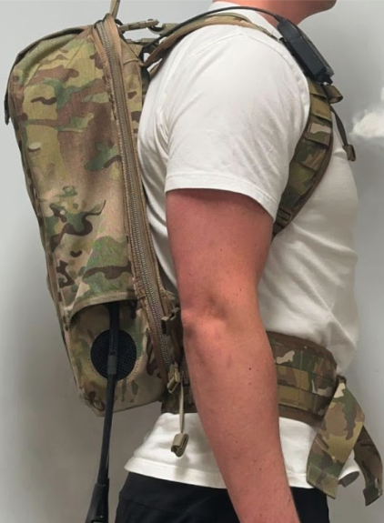
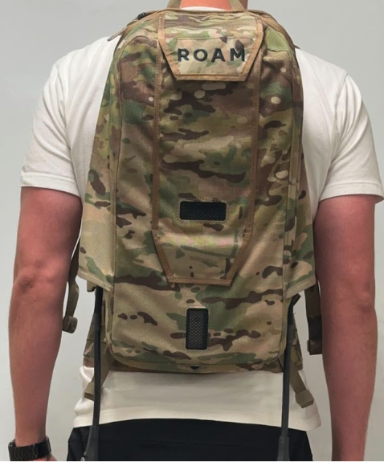
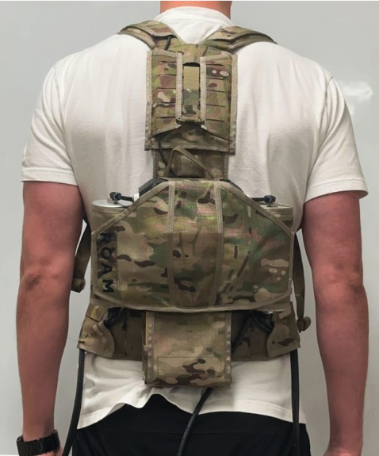
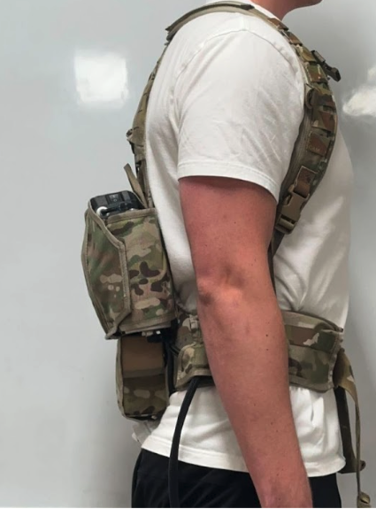

Slim Power Pack
Roam Robotics
Redesigned Roam's pneumatic powerpack from a backpack-sized R&D prototype into a waist-worn system containing the compressor, pressure reservoir, battery, electronics, plumbing, thermal management, and enclosure system.
- Reduced weight from 15.4 lb to 9.7 lb while preserving airflow performance
- Repackaged compressor, reservoir, battery, electronics, pneumatic routing, and thermal components around wearable ergonomics
- Specified enclosure walls, ribbing, sealing fasteners, O-ring stock, and connector changes to support field durability
- Balanced mechanical packaging, heat, water ingress, serviceability, airflow, and user comfort under aggressive timing
Established the customer-expected powerpack form without sacrificing core pneumatic performance.